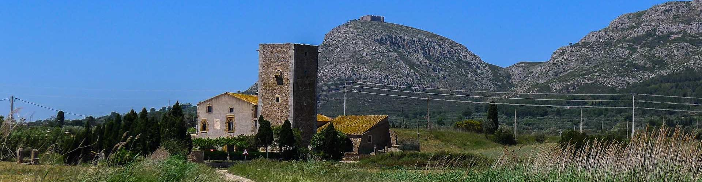

Ruta · Montgrí
Ruta que comença a Torroella de Montgrí s’enfila per la falda del Montgrí, seguint pistes i camins que ens ofereixen unes àmplies panoràmiques de l’Empordà, de la costa i de les Illes Medes. Ruta…